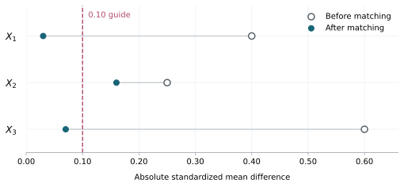

Exercises
Outcome regression
For these exercises, assume the measured-confounding SCM with covariates \(X\), exposure \(A\), and outcome \(Y\). Assume observations related to different units are i.i.d. and the relevant conditional means are defined. You may use a calculator. Keep additional digits during calculations and report your final answers to two decimal places.
1. Estimating means from counts
Both \(X\) and \(A\) are binary, and \(Y\) indicates an adverse outcome. The dataset has the following counts:
| \(X\) | \(A\) | Number of people | Number with \(Y=1\) |
|---|---|---|---|
| 0 | 0 | 30 | 12 |
| 0 | 1 | 10 | 2 |
| 1 | 0 | 20 | 12 |
| 1 | 1 | 40 | 16 |
Estimate \(\mu(X,A)\) for all four combinations of \(X\) and \(A\).
Find \(\hat\mu(X,1)\) and \(\hat\mu(X,0)\) for someone whose recorded values are \(X=1,A=0\).
Estimate \(E\left[Y(1)\right]\) and \(E\left[Y(0)\right]\) using everyone in the sample.
Estimate and interpret the ATE, causal relative risk, and causal odds ratio for intervention value \(1\) compared with \(0\).
2. Linear regression with an interaction
For a continuous outcome, the fitted conditional mean is
\[ \hat\mu(X,A)=10+2X-3A-AX. \]
For the sake of simple computations, suppose the sample contains only four people:
| \(X\) | \(A\) |
|---|---|
| 1 | 0 |
| 2 | 1 |
| 3 | 0 |
| 4 | 1 |
Complete columns for \(\hat\mu(X,A)\), \(\hat\mu(X,1)\), and \(\hat\mu(X,0)\) for these four people.
Estimate \(E\left[Y(1)\right]\), \(E\left[Y(0)\right]\), and the ATE.
A classmate reports an ATE of \(-3\), the coefficient on \(A\). Explain the error.
3. Logistic regression
For a binary outcome, the fitted logistic regression is
\[ \operatorname{logit}\{\hat\mu(X,A)\}=-1+X-A. \]
Like the last problem, assume - for simplicity - that the sample contains two people with \(X=0\) and two with \(X=1\). To convert log odds \(\eta\) to a probability, use \(\exp(\eta)/(1+\exp(\eta))\).
Calculate \(\hat\mu(X,A)\) for each combination of \(X=0,1\) and \(A=0,1\).
Estimate \(E\left[Y(1)\right]\) and \(E\left[Y(0)\right]\).
Estimate the ATE, causal relative risk, and causal odds ratio for intervention value \(1\) compared with \(0\).
Calculate \(\exp(-1)\), the fitted conditional odds ratio for treatment. Compare it with your causal odds ratio in part c and explain why they need not agree.
4. A nonbinary exposure
For a continuous exposure \(A\) and continuous outcome \(Y\), the fitted conditional mean is
\[ \hat\mu(X,A)=20+2X-A-0.5AX. \]
The sample contains four people with \(X\) values \(1,2,3,4\).
Estimate \(E\left[Y(a)\right]\) at \(a=0,2,4\).
Using \(a=0\) as the reference, calculate differences and ratios of means for \(a=2\) and \(a=4\). Interpret your results in outcome units and as multiples of the reference mean.
Sketch the estimated mean response curve over \(0\leq a\leq4\).
Matching
For Exercises 5 and 6, assume the measured-confounding SCM with covariate \(X\), exposure \(A\), and outcome \(Y\), with i.i.d. observations. Use a person’s own outcome to estimate the conditional mean at their observed exposure and the average matched outcome to estimate the conditional mean at the other exposure. You may use a calculator. Report final answers to two decimal places.
5. Exact matching
Consider these data:
| Person | \(X\) | \(A\) | \(Y\) |
|---|---|---|---|
| 1 | 1 | 1 | 6 |
| 2 | 1 | 1 | 8 |
| 3 | 1 | 0 | 4 |
| 4 | 3 | 1 | 12 |
| 5 | 3 | 0 | 7 |
| 6 | 3 | 0 | 9 |
- Match each person to everyone in the opposite exposure group with exactly the same \(X\). Complete the table.
| Person | Matched people | Estimate of \(\mu(x_i,1)\) | Estimate of \(\mu(x_i,0)\) | Difference |
|---|---|---|---|---|
| 1 | ||||
| 2 | ||||
| 3 | ||||
| 4 | ||||
| 5 | ||||
| 6 |
Estimate the ATE, ATT, and ATC. State whose differences you average for each estimate.
Compute the mean of \(X\) in each exposure group before matching. Then replace \(Y\) with \(X\) in your matched comparisons and compute the mean on each side.
Compute the standardized mean difference before and after matching. Use the supplied original pooled standard deviation, \(s=1.15\), as the denominator in both calculations. What do your results say about balance in \(X\)?
6. Nearby matching
Consider these data:
| Person | \(X\) | \(A\) | \(Y\) |
|---|---|---|---|
| 1 | 1 | 1 | 8 |
| 2 | 2 | 0 | 5 |
| 3 | 4 | 1 | 15 |
| 4 | 8 | 0 | 11 |
- Find one nearest match for each person in the opposite exposure group, using absolute difference in \(X\). A person may be used as a match more than once. Complete the table.
| Person | Matched person | Estimate of \(\mu(x_i,1)\) | Estimate of \(\mu(x_i,0)\) | Difference |
|---|---|---|---|---|
| 1 | ||||
| 2 | ||||
| 3 | ||||
| 4 |
Estimate the ATE, ATT, and ATC. State whose differences you average for each estimate.
Compute the mean of \(X\) in each exposure group before matching. Then replace \(Y\) with \(X\) in your matched comparisons and compute the mean on each side.
Compute the standardized mean difference before and after matching. Use the supplied original pooled standard deviation, \(s=3.35\), as the denominator in both calculations. Did matching improve balance? Does the resulting absolute SMD meet the \(0.10\) rule of thumb?
Is nearest-neighbor matching symmetric in this example? Use a specific pair of people to explain your answer.
7. Reading a balance plot
The plot shows absolute standardized mean differences before and after matching. The dashed line marks \(0.10\).

Which covariate shows the largest improvement in its absolute SMD?
Which covariate still exceeds the \(0.10\) rule of thumb after matching?
Identify one matching choice you could reconsider to address the remaining imbalance. What would you check after changing it, before estimating a causal effect?
8. Overlap and the causal target
A study has 100 treated people and 200 untreated people. Some treated people have no untreated people with sufficiently similar covariates. A matching analysis retains 70 treated people and uses 50 untreated people as their matches. The software reports the requested target as “ATT.”
Whose treatment effect does the resulting estimate concern? Explain why it need not estimate the ATT for all 100 treated people.
Suppose instead that all 100 treated people remain and the same 50 untreated people supply their matches, with reuse allowed. Does leaving out the 150 unused untreated people by itself change the ATT target? Explain.
9. What matching establishes
For each claim, state whether it is correct and explain your answer.
“Every covariate has an SMD of zero, so the covariate distributions must agree.”
“We used one untreated person as a match five times, so we have five independent untreated outcomes.”
Propensity scores
For these exercises, assume the measured-confounding SCM with binary exposure \(A\), outcome \(Y\), and covariates \(X\). Assume the observations are i.i.d. and the relevant conditional means are defined. Write \(E=e(X)\) for the true propensity score and \(\hat E=\hat e(X)\) for its estimate. In the outcome models, \(s\) denotes a numerical score value. You may use a calculator. Keep additional digits during calculations and report final answers to two decimal places.
10. Understanding the propensity score
Let \(X=(X_1,X_2)\), where both covariates are binary. The true propensity score is
\[ e(X)=0.10+0.20X_1+0.20X_2. \]
- Calculate the propensity score for each covariate profile.
| \(X_1\) | \(X_2\) | \(E=e(X)\) |
|---|---|---|
| 0 | 0 | |
| 0 | 1 | |
| 1 | 0 | |
| 1 | 1 |
Identify two different covariate profiles with the same propensity score.
Must two people with those profiles receive the same observed treatment? Explain.
11. Outcome regression with a continuous outcome
Return to the four people in Exercise 2, now with estimated propensity scores added. A fitted outcome regression using the score and treatment gives
\[ \hat\mu(s,a)=10+2s-3a-as. \]
- Complete the prediction columns. Use each person’s estimated score as the score input, keeping it fixed when changing the treatment value.
| \(X\) | \(A\) | \(\hat E\) | \(\hat\mu(\hat E,A)\) | \(\hat\mu(\hat E,1)\) | \(\hat\mu(\hat E,0)\) |
|---|---|---|---|---|---|
| 1 | 0 | 0.20 | |||
| 2 | 1 | 0.40 | |||
| 3 | 0 | 0.60 | |||
| 4 | 1 | 0.80 |
- Estimate \(E\left[Y(1)\right]\), \(E\left[Y(0)\right]\), and the ATE. Interpret the ATE in outcome units.
12. Outcome regression with a binary outcome
As in Exercise 3, \(Y\) is binary. A fitted outcome regression using the score and treatment gives
\[ \operatorname{logit}\{\hat\mu(s,a)\}=-1+s-a. \]
Consider four people with the estimated propensity scores shown below. To convert fitted log odds \(\eta\) to a probability, use \(\exp(\eta)/(1+\exp(\eta))\).
- Complete the table. For each person, use their estimated score to predict the probability of \(Y=1\) under each treatment value.
| Person | \(\hat E\) | \(\hat\mu(\hat E,1)\) | \(\hat\mu(\hat E,0)\) |
|---|---|---|---|
| 1 | 0.25 | ||
| 2 | 0.25 | ||
| 3 | 0.75 | ||
| 4 | 0.75 |
Use the completed table to estimate \(E\left[Y(1)\right]\) and \(E\left[Y(0)\right]\) by averaging each prediction column.
Estimate and interpret the ATE, causal relative risk, and causal odds ratio for intervention value \(1\) compared with \(0\).
13. Propensity-score matching
Return to the data from Exercise 6, with estimated propensity scores added:
| Person | \(X\) | \(A\) | \(Y\) | \(\hat E\) |
|---|---|---|---|---|
| 1 | 1 | 1 | 8 | 0.20 |
| 2 | 2 | 0 | 5 | 0.30 |
| 3 | 4 | 1 | 15 | 0.80 |
| 4 | 8 | 0 | 11 | 0.70 |
- Find one nearest untreated match for each treated person using absolute difference in estimated propensity scores. A person may be used as a match more than once. Complete the table using each treated person’s own outcome and their match’s outcome.
| Treated person | Matched person | Estimate of \(\mu(\hat E,1)\) | Estimate of \(\mu(\hat E,0)\) | Difference |
|---|---|---|---|---|
| 1 | ||||
| 3 |
- Estimate and interpret the ATT.